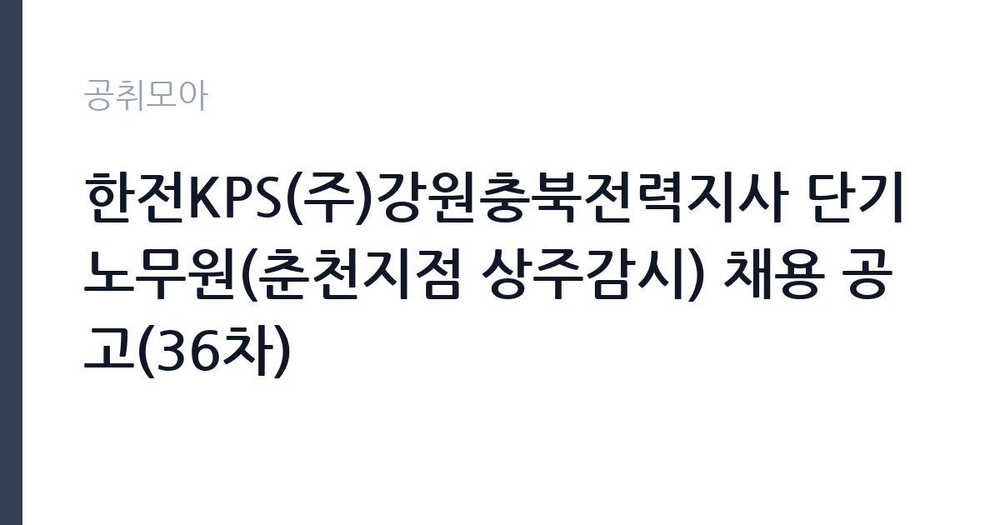

[공공기관] 한전KPS(주)강원충북전력지사 단기노무원(춘천지점 상주감시) 채용 공고(36차)
한전KPS(주) · 강원 · 마감 2026-11-02 (D-3) · 출처 잡알리오

한눈에 보는 모집 조건
| 기관 | 한전KPS(주) |
|---|---|
| 공고명 | 한전KPS(주)강원충북전력지사 단기노무원(춘천지점 상주감시) 채용 공고(36차) |
| 고용형태 | 일용직 |
| 근무지 | 강원 |
| 게시일 | 2026-10-30 |
| 마감일 | 2026-11-02 (D-3) |
지원자격, 이렇게 읽으세요
- 공공기관 채용공시
- 세부 조건은 원문 공고문 확인
일용·단기 근로는 정해진 사업 기간이나 단기 업무를 위해 채용되는 형태입니다. 근무 일수와 일당이 정해지고 사업 종료 시 근로관계가 끝납니다. 계절 사업이나 행사 지원, 단기 대체 인력으로 활용되는 경우가 대표적입니다. 이번 공고는 한전KPS(주)이 직접 진행하는 자체 전형입니다. 단기노무 채용은 학력과 경력 제한이 없는 경우가 대부분이지만, 현장 근무가 가능한 체력과 안전 교육 이수 여부를 확인합니다. 발전소 출입을 위해 신원조회와 보안 서약이 필요하고, 일부 작업은 관련 자격이나 교육 이수증을 요구합니다. 근무 기간과 일당, 임금 지급 방식이 공고문에 명시되므로 총 근무 일수를 함께 따져야 합니다. 제출서류는 공고문에 적힌 순서대로 정리하면 담당자가 확인하기 쉽습니다. 자격 취득 예정자는 채용 공고의 예정자 허용 조항을 먼저 확인해야 합니다. 조항이 없으면 지원 자체가 반려될 수 있습니다. 경력 요건은 총 경력이 아니라 해당 직무 경력만 인정하는 경우가 있으니, 증명서의 직무 기술을 함께 확인하십시오.
이 공고의 포인트
이 건은 한전KPS(주)이 같은 시기에 낸 3개 모집분야 가운데 발전설비 정비 보조 직무입니다. 다른 직무 공고와 요건이 다르므로 지원 전에 모집분야 표를 대조해야 합니다. 이 공고의 첫 번째 포인트는 고용 형태입니다. 사업 기간에 맞춰 채용되므로 근무 일수와 보수가 비교적 명확합니다. 대신 다음 근무지를 별도로 구해야 합니다. 두 번째는 업무 범위가 명확하다는 점입니다. 발전설비 정비 보조 직무로 채용되므로 배치 이후 담당 업무가 크게 흔들리지 않습니다. 세 번째는 근무지입니다. 강원 지역 근무로 수도권 공고에 비해 지원자 분포가 넓지 않아 상대적으로 경쟁이 분산되는 경우가 있습니다. 채용 규모가 크지 않아 면접 비중이 높은 전형이 될 가능성이 있습니다. 같은 직무 공고 중에서는 접수 마감이 가장 빨라 일정을 앞당겨 잡아야 합니다. 선발 인원은 공고문에 명시되어 있으니 모집분야 항목을 함께 확인하십시오.
전형은 어떻게 진행되나
전형은 서류심사와 면접심사를 기본으로 하고 직무에 따라 필기나 실기, 체력검정이 추가됩니다. 서류 단계에서는 응시자격 충족 여부와 제출서류 형식을 확인하며 이 단계에서 탈락하는 지원자가 적지 않습니다. 면접은 직무 이해도와 경험을 확인하는 방식으로 진행되고 발표는 개별 통보나 홈페이지 게시로 이뤄집니다. 최종합격 이후에는 결격사유 조회와 채용 신체검사가 이어지며 이 절차에서 문제가 확인되면 합격이 취소될 수 있습니다. 구체적인 전형 단계와 배점은 공고문에 표로 정리되어 있으니 원문을 기준으로 준비하십시오. 서류 단계에서 요건을 충족하지 못하면 이후 전형을 준비할 기회가 없으므로, 제출 전 요건 대조를 한 번 더 하는 것이 좋습니다.
이런 분께 추천해요
- 현장 작업과 육체 노동에 무리가 없는 분
- 안전 수칙과 출입 절차를 지킬 수 있는 분
- 공사 기간 중 연속 근무가 가능한 분
지원 전 체크리스트
- 응시자격 요건과 경력 기준을 충족하는가 — 경력은 증명서로 입증해야 합니다
- 근무 기간과 일당·월급 지급 방식을 확인했는가
- 제출서류 목록을 모두 준비했는가 — 누락 시 서류 단계에서 탈락합니다
- 접수 마감 2026-11-02 이전에 접수 방식을 확인해 제출했는가
모집 일정과 제출 타이밍
접수 마감은 2026-11-02이고 공고는 2026-10-30에 게시되었습니다. 준비 기간 3일 안에 서류 작성, 증빙 발급, 접수를 모두 마쳐야 하므로 주말을 포함해 일정을 미리 나누는 것이 좋습니다. 특히 경력 기술서나 직무수행계획서를 요구하는 공고는 작성에 시간이 걸리므로 첫날 초안을 잡으십시오. 서류 합격자 발표와 면접 사이 간격이 짧은 경우가 많아 면접 예상 질문은 서류 제출 전에 정리해 두는 편이 유리합니다. 마감 직전에는 접속이 몰리므로 여유를 두고 제출하십시오. 마감 이후에는 어떤 사유로도 접수가 인정되지 않으므로 하루 전 제출을 목표로 하십시오.
직무 이해하기: 공공기관
한전KPS는 발전설비의 정비와 운영 지원을 담당하는 한전 계열 공기업입니다. 전국 사업소에서 화력·원자력·수력 발전소의 계획예방정비와 경상정비를 수행하고, 정비 기간에는 단기 인력을 집중 채용합니다. 단기노무원은 정비 현장의 보조 업무와 안전 패트롤, 상주 감시를 맡으며 근무 기간과 일당 기준이 공고문에 명시됩니다. 원자력 사업소는 방사선 관리와 보안 절차가 특히 엄격합니다. 단기노무원은 발전설비의 계획예방정비 공사 기간에 투입되어 정비 작업을 보조하는 일입니다. 공사 현장에서 자재 운반과 장비 정리, 작업 구역 정리, 보조 작업을 맡고, 작업 전후 안전 점검과 청소를 수행합니다. 발전소 내부는 보안과 안전 규정이 엄격해 출입 절차와 작업 허가 절차를 따라야 합니다. 공사 기간이 정해져 있어 근무 일수가 명확하고, 교대나 야간 작업이 포함될 수 있습니다. 밀폐 공간이나 고소 작업은 별도 교육과 자격이 필요합니다. 근무조는 사업 일정과 기상 상황에 맞춰 편성되므로 면접에서 배치 구역을 확인하는 것이 좋습니다. 업무 매뉴얼과 지침이 문서로 정리되어 있어 절차를 익히면 반복 업무는 빠르게 손에 붙습니다. 이 건의 근무 대상 지역·부서는 원문 기준 '춘천지점 상주감시'입니다.
자기소개서 작성 팁
단기 채용은 지원서 분량이 길 필요가 없습니다. 현장 근무 경험과 안전 교육 이수 사실, 즉시 근무 가능 여부를 간결하게 쓰십시오. 지게차·크레인 같은 장비 운전 자격이 있다면 반드시 기재해야 합니다. 근무 기간 동안 결근 없이 일할 수 있다는 점을 분명히 밝히십시오. 문항별 글자 수 제한을 먼저 확인하고, 각 문항의 첫 문장에 결론을 배치하는 방식이 읽기 쉽습니다. 지원 동기는 기관의 어떤 사업에 기여하겠다는 한 문장으로 시작하고, 이어서 본인의 경험을 근거로 붙이십시오. 감점을 피하려면 다른 기관에 보낼 수 있는 범용 문장을 그대로 쓰지 않는 것이 중요합니다. 기관 이름과 사업명이 문장 안에 자연스럽게 들어가야 준비도가 드러납니다.
면접 준비 포인트
면접은 형식보다 근무 가능 여부 확인에 가깝습니다. 현장 작업 경험, 안전 수칙 준수, 야간·휴일 근무 가능 여부를 묻습니다. 위험 요소를 발견했을 때 어떻게 보고하는지 답하면 신뢰를 얻습니다. 장비 사용 경험이나 관련 교육 이수 사실을 구체적으로 밝히십시오. 마지막 질문 시간에는 근무 조건에 대한 확인 사항을 한 가지 정도 준비해 가면 성실성이 드러납니다.
급여·근무조건 읽는 법
알리오(공공기관 경영정보 공개시스템) 2025년 결산 경영공시 기준으로 한전KPS(주) 일반정규직 1인당 평균보수액은 8,803만원, 공시된 신입사원 초임은 4,457만원입니다. 평균보수액은 기본급에 고정수당·실적수당·성과상여금·급여성 복리후생비를 모두 합산한 값이라 월 기본급만 보고 판단하면 실제와 크게 어긋납니다. 이번 공고는 단기·일용 채용이라 위 정규직 평균보수는 적용되지 않습니다. 근무 일수와 일당 기준으로 산정되므로 공고문 처우 항목을 확인해야 합니다. 단기노무원 보수는 일당 또는 시급 기준으로 산정되고, 근무 일수에 따라 총액이 달라집니다. 연장·야간·휴일 근무에는 가산수당이 붙습니다. 2026년 적용 최저임금은 시급 10,320원, 월 환산 2,156,880원(주 40시간·209시간 기준)입니다. 고용노동부 고시 제2025-47호로 확정된 금액입니다. 공고문에 금액이 제시되지 않은 항목은 원문 보수표나 처우 설명에서 확인해야 하며 확인되지 않은 수치는 쓰지 않는 것이 원칙입니다. 비교할 때는 월 급여뿐 아니라 상여·명절휴가비·복지포인트·초과근무수당까지 포함한 연간 총액으로 계산하십시오. 기간제라면 계약 기간 동안의 총액을, 무기계약이라면 호봉 상승과 정년까지의 누적 소득을 기준으로 판단하는 편이 정확합니다.
자주 묻는 질문
- 선발 인원은 몇 명인가요?
공고문의 모집분야 항목에 직종별 인원이 표로 제시되어 있습니다. 첨부된 공고문 원문에서 확인하십시오. - 근무지는 어디인가요?
강원 지역의 한전KPS(주) 소속 근무지입니다. 세부 주소와 출퇴근 조건은 원문 공고문에서 확인할 수 있습니다. - 보수는 얼마인가요?
채용 신분(일용·단기)과 기관 임금 규정에 따라 정해지며 구체적인 금액은 공고문 처우 항목에 제시됩니다. 금액이 공개되지 않은 경우에는 원문의 보수표를 확인하십시오.
함께 보면 좋은 공고
[공공기관] 2026년 하반기 제2차 한국문화예술위원회 휴직대체인력(일반행정) 및 계약직(일반행정) 채용 — 마감 2026-11-13[공공기관] 기장군도시관리공단 2026년도 체험형 청년인턴 채용 재공고 — 마감 2026-11-10[공공기관] [광주보훈병원] 계약직 업무지원직(고객지원_검사코디) - 휴직대체 직원 채용 공고 — 마감 2026-11-09출처: 잡알리오 공개정보를 바탕으로 공취모아가 정리한 안내글입니다. 모집 조건·일정은 변경될 수 있으니 지원 전 반드시 원문 공고문을 확인하세요. 본 글은 정보 제공용이며 합격을 보장하지 않습니다.